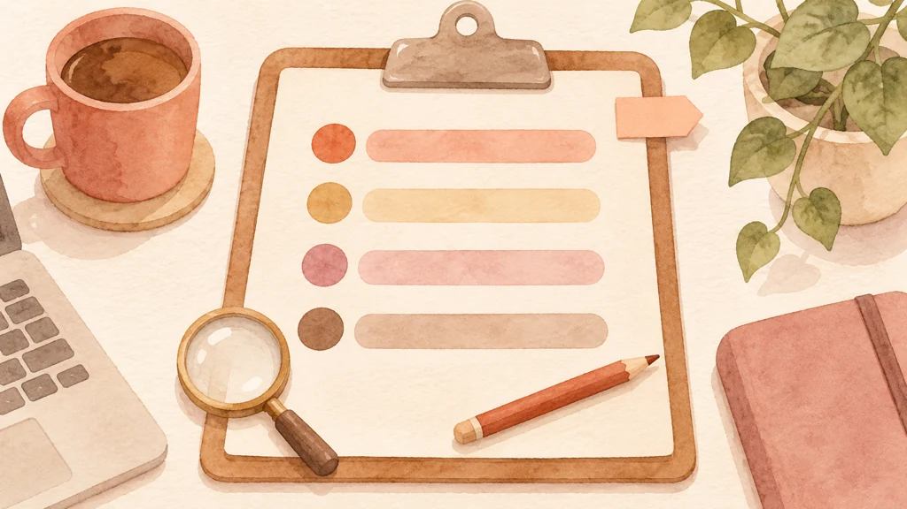

タイプA
本文までAIで出力する
- 構成
- AIで本文
- 人が確認
- ChatGPTで構成も本文もまるごと作る
- 2chまとめ・解説系動画に多い
- 量産しやすく初心者向け

寝かしつけ後のスキマ時間で、AIの下書きを声に出せる台本に。誰に・何のためにを決めて、最後の言い方を整えます。
AI×SNSで在宅収入を叶える主婦みな @mina_ai_fukugyo 作例のプロンプトへ ↓ノウハウを凝縮した限定デジタルブック
公式LINEにお友だち登録していただいた方限定で
無料プレゼント中🎁

150万円の損失からようやく掴み取った、
「寝かしつけ後の30分が"収入を生む時間"に変わる実践マニュアル」を一冊に詰め込みました。
スーパーの買い物で値上げにため息。
毎月のやりくりがしんどい…
「子どもの将来の選択肢を広げたい」でも、
働きに出るまとまった時間はない
在宅ワークに興味はあるけど、
特別なスキルがないから無理だと思っている
物価は上がるのに、使えるお金は増えない。
変わりたいと願いつつ、忙しさに追われて「何も変わらないまま1年が過ぎる」…
実はこれ、一番もったいない状態なんです。
そのお悩み、今すぐ
「ChatGPT×台本作成」
で解決できます！✊
AIを賢く使えば、未経験からでも
子どもがお昼寝中の「スキマ時間」でサクッとお仕事ができちゃうんです。

専業主婦の頃は、自分の欲しいものを買うにも夫に遠慮して、つい我慢していました。
自分でも収入を作りたくて、物販やハンドメイド、ポスティングにも挑戦。それでも、時間をかけた分だけ結果が出るわけではありませんでした。
AIも最初は、子どもの夜泣きを相談するくらい。少しずつ使い方を覚えて、暮らしの合間にできる仕事を増やしました。
だから、これから始める人には、何をどの順番で進めるかが分かる形で届けたい。今回は、案件の依頼文を読み解くところから、ChatGPTで下書きを作り、自分の手で見直して納品できる台本に仕上げるまでの流れをまとめました。
まずは短い台本で、直す一文を選んでみてください。
今がチャンス！
クラウドワークスには「ChatGPT使用可」「AI歓迎」と明記された動画台本案件があります。
旧版で紹介した目安です。現時点の相場や将来の収入を示すものではありません。報酬やAI利用条件は募集ごとに確認してください。
未経験から応募できる募集や、継続案件につながるケースもあるので、興味があれば試してみるのがおすすめです。
案件に応募する前に、まずこの違いを図解でイメージしておきましょう！
タイプA
タイプB
💡 ワンポイント！
タイプBの案件では「AIに丸投げ」はNGです。「構成は自分で考え、AIは形にしてもらう道具」と捉えると採用されやすくなります。

一緒にやってみよう
| 募集のタイプ | 台本 | 調査 | 撮影 |
|---|---|---|---|
| 台本だけ | 含む | 含まない | 含まない |
| リサーチ＋台本 | 含む | 含む | 含まない |
| 台本＋撮影 | 含む | 含まない | 含む |
●＝含む（比較例）。実際は募集文で確認。
不明点は依頼主へ。顧客名・未公開資料は無断でAIに入力しません。
入力できる情報だけを渡し、同じチャットで本文をパートごとに作ります。
コピーできるプロンプトへ ↓
【練習用・架空案件】雑貨ショップのInstagramリール台本 お世話になっております。新作「仕切りトート」を紹介する30秒前後のリール台本を1本お願いします。 ■ 見てほしい人 子どもとの外出で荷物が多く、玄関で鍵や小物を探しがちなママ。 ■ ゴール どんな風に荷物を分けられるかを伝え、プロフィールの商品リンクから詳細を見てもらうこと。 ■ 商品情報・使える素材 バッグの内側に仕切りと小物用ポケットがあります。こちらから「バッグの全体」「真上から見た内側」「鍵・水筒・おむつポーチを入れる手元」の動画を支給します。玄関のシーンは、既存素材の有無を事前に確認してください。 ■ 台本の条件 最初の3秒は日常の困りごとから。押し売りっぽくならない親しみやすい口調で、最後にプロフィールの商品リンクを案内してください。支給情報にない価格、容量、耐久性、口コミは書かないでください。 ■ 納品 30秒前後で、カットごとの「秒数／ナレーション／テロップ／画面案」をGoogleドキュメント1本にまとめてください。初稿はご依頼から3日以内。AIは下書きに使ってOKですが、商品情報の確認と最終の読み合わせは人が行ってください。
以下のクラウドワークスの案件依頼文を読み、プロの動画シナリオライターの視点で「台本の構成案」を作成してください。 【依頼文】 （ここにクラウドワークスの依頼文をそのまま貼り付ける） 【出力要件】 以下を必ず記載してください。 ・登場人物とその役割 ・全体の流れ（導入→展開→まとめ） ・各パートの文字数配分 ・視聴者を惹きつけるためのフックや工夫 ・（もしあれば）クライアントに事前に確認すべき不明点や質問事項
冒頭3秒で困りごとが伝わる？特徴を実際の使い方で見せている？商品ページへの案内は自然？条件の不明点は先に確認します。
確定した構成案に沿って、台本の本文を作成してください。視聴者が思わず見入ってしまうような台本に仕上げたいです。 【今回の執筆範囲】（例：30秒リールの導入から商品リンク案内まで） 【尺・文字数の目安】（例：30秒前後。冒頭のフックは3秒以内） 【全体の雰囲気・口調】（例：親しみやすい語り口） 【指示】 ・状況がすぐに映像として思い浮かぶよう、セリフやナレーションは解像度を高く、具体的に書いてください。 ・視聴者の感情が動くような、メリハリのある展開やセリフ回しを意識してください。 ・商品紹介の場合は、支給された情報と素材だけを使い、依頼文で指定された行き先に自然につなげてください。納品形式が指定されている場合は、その項目ごとに出力してください。
以下の構成案を「いち視聴者」として読み、率直なダメ出しとアドバイスをお願いします。 【構成案】 （ここに構成案を貼り付ける） 【フィードバックしてほしい点】 ・途中で飽きそうな部分 ・もっと続きが気になる展開に変えられそうな部分 ・感情が動くポイントの過不足 ・冒頭の引きの強さ
架空の依頼例・説明用の下書き
「収納しやすくなっています」特徴だけで、使う場面が見えない
「鍵は内ポケット、水筒は横のスペースに。」
「鍵は内ポケット」で一呼吸。水筒を入れる画に切り替えてから「水筒は横のスペースに」と読みます。
「水筒は横のスペースに入れます」と補って、映像と一緒に聞いて意味が通るか確認します。
「もっと自然な日本語にして」と頼んだ後も、依頼の意味が変わっていないか、人が読みます。
忙しい日は途中で区切ってOK

ここまで読んで、「プロンプトが分かったから自分でもできそう！」と思ったかもしれません。
でも実は…
「プロンプトを知っていること」と
「実際に継続して稼げること」は全く別物
なんです。
ここでつまずいて、なかなか一歩を踏み出せない方も少なくありません🥺
私自身、過去に自己流で副業に手を出し、なんと
150万円ものお金を失う
という痛い経験をしています。
「私には才能がないんだ…」とお布団の中で一人泣いた夜は数え切れません。
そこから必死に試行錯誤し、ようやく見つけたのが「AIを賢く活用し、手堅くお家で収入を作るための『実践ノウハウと神テンプレート』」でした。
私と今のあなたの違いは、才能ではありません。
「型を知っているかどうか、失敗を避けるコツを知っているかどうか」
という部分が大きいと感じています。
👑 無料で今すぐ手に入る 👑
ノウハウを凝縮した限定デジタルブック
公式LINEにお友だち登録していただいた方限定で
無料プレゼント中🎁
150万円の損失からようやく掴み取った、
「寝かしつけ後の30分が"収入を生む時間"に変わる実践マニュアル」を一冊に詰め込みました。
※AIの進化に合わせて内容は今後アップデートする場合があります。
無料配布の内容・条件は予告なく変更されることがあります。
Instagramだけでは伝えきれない
無料オープンチャット「みな AI×SNS活用術」

画像をタップするとオープンチャットが開きます。